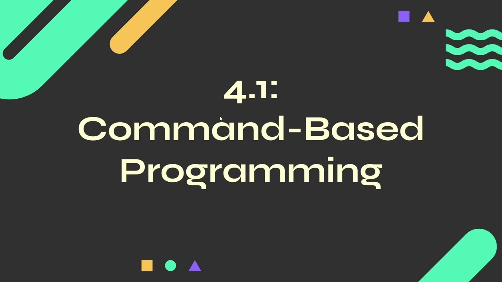
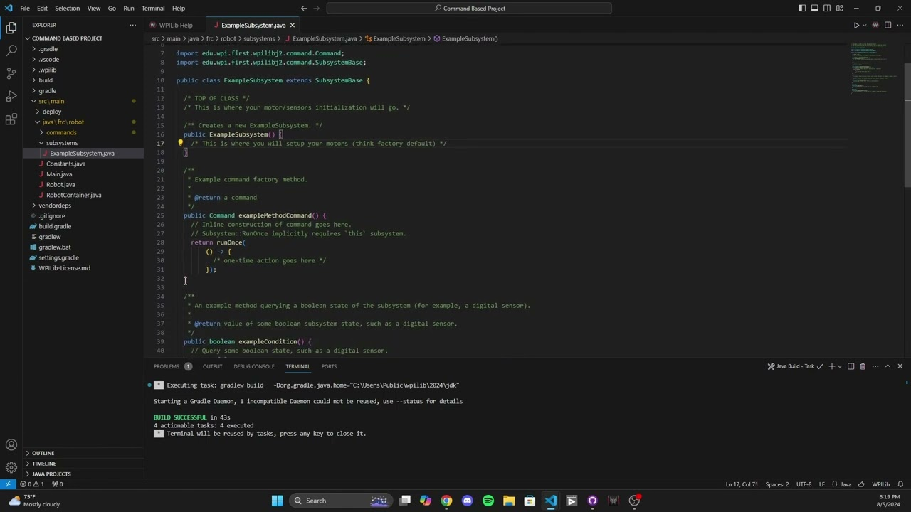
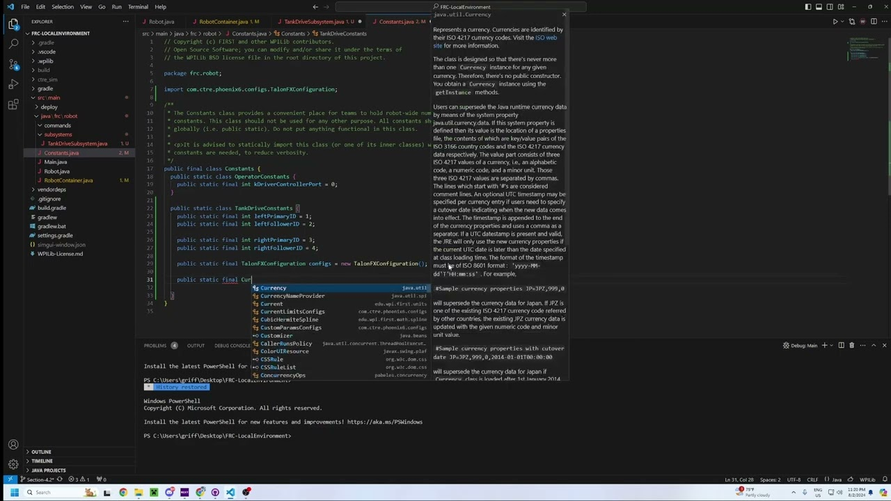
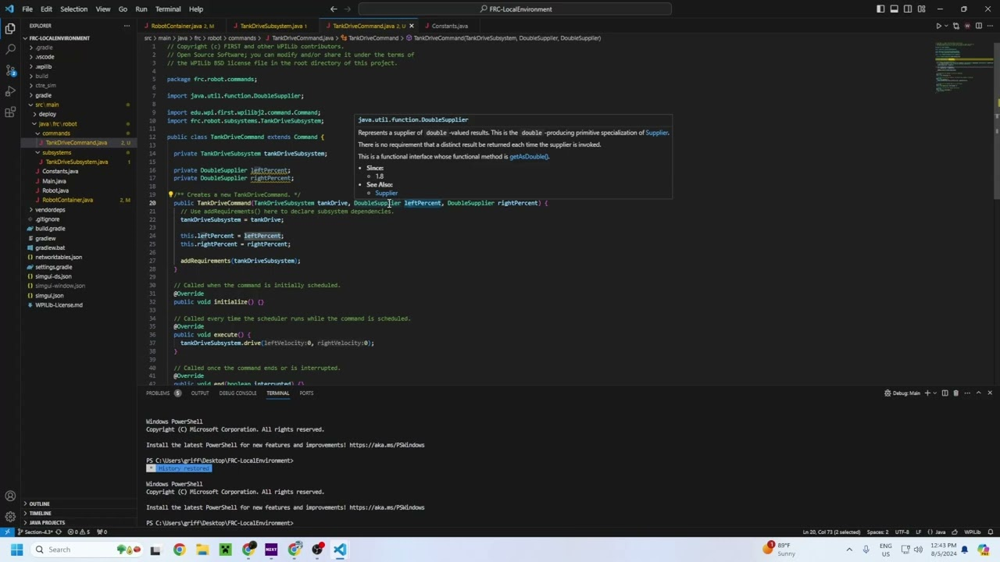
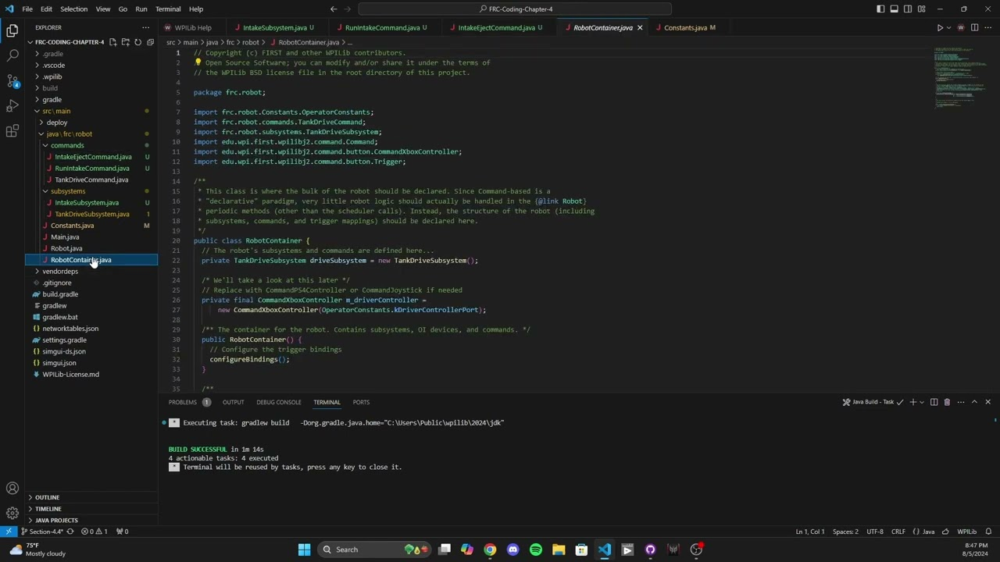
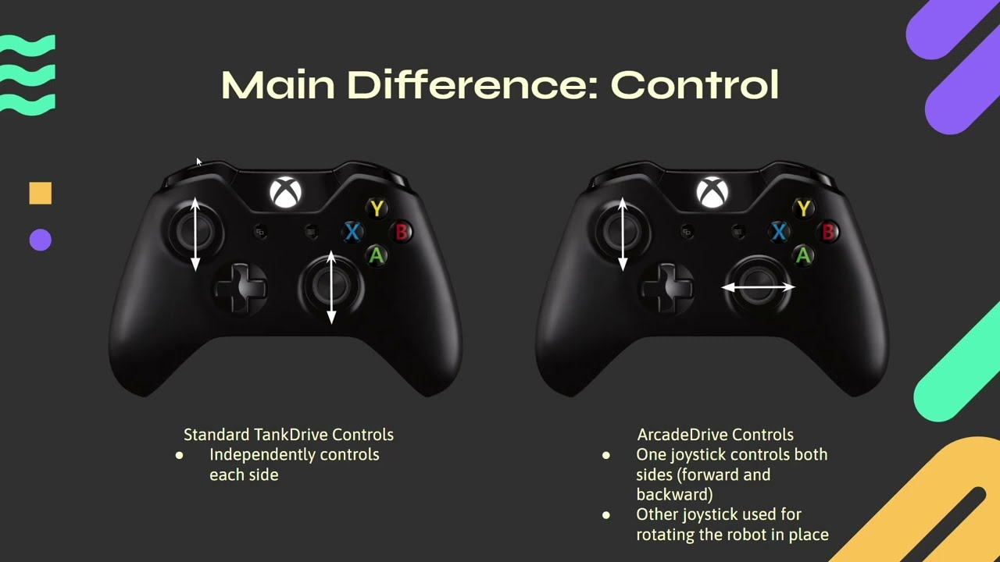
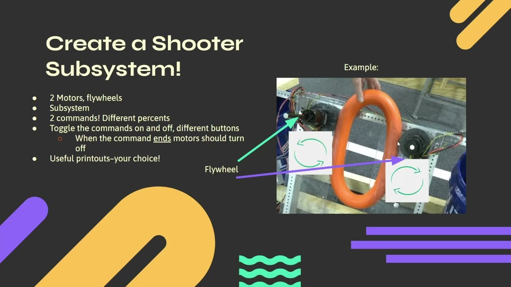

4.1 - Intro to Command Based Programming
This lesson covers command-based programming, teaching you to organize robot code into subsystems and commands, bind buttons, implement periodic loops, and use the CommandScheduler for managing command execution.

4.2 - Creating a Command Based Project
This lesson walks you through creating a command-based project, covering the setup of ExampleSubsystem, ExampleCommand, and the role of RobotContainer in managing subsystems and commands in Robot.java.

4.3 - Creating a Tank Drive Subsystem
This lesson covers creating a tank drive subsystem, including motor configuration, current limiting, drive and stop methods, and displaying motor outputs on SmartDashboard.

4.4 - Working with our Tank Drive Subsystem
This lesson shows how to create a tank drive command, bind it to a controller, and use joystick values for continuous input. You'll implement execute and end methods, set the command as the default for the subsystem, and verify functionality through simulation.

4.5 - Implementing an Intake Subsystem
This lesson covers creating an intake subsystem with motor control methods and commands. You'll develop the RunIntakeCommand and IntakeEjectCommand, display status on the SmartDashboard, and bind these commands to buttons for intuitive control using whileHeld and toggle mechanisms.

4.6 - Arcade Drive
This lesson introduces ArcadeDrive, explaining its advantages over TankDrive. You'll modify the DriveSubsystem to include DifferentialDrive, create an ArcadeDriveCommand with a deadband for precision, and bind joysticks for intuitive arcade control.

4.7 - Project 2
This lesson teaches you to create a two-motor shooter subsystem, link commands to buttons, set motor outputs, and use a timer to end the command after five seconds.